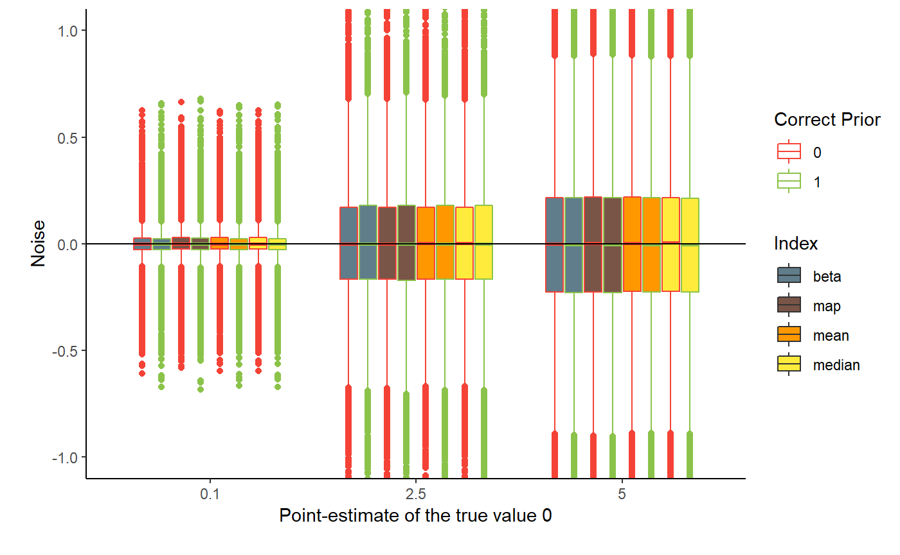

Comparison of Point-Estimates
Source:vignettes/2_IndicesEstimationComparison.Rmd
2_IndicesEstimationComparison.RmdThis vignette can be referred to by citing the package:
- Makowski, D. (2019). Understand and Describe Bayesian Models and Posterior Distributions using BayestestR. Available from https://github.com/easystats/bayestestR. DOI:10.5281/zenodo.2556486.
Effect Point-Estimates in the Bayesian Framework
Introduction
One of the main difference between the Bayesian and the frequentist frameworks is that the former returns a probability distribution of each effect (i.e., parameter of interest of a model, such as a regression slope) instead of a single value. However, there is still a need and demand, for reporting or use in further analysis, for a single value (point-estimate) that best characterise the underlying posterior distribution.
There are three main indices used in the literature for effect estimation: the mean, the median or the MAP (Maximum A Posteriori) estimate (roughly corresponding to the mode (the “peak”) of the distribution). Unfortunately, there is no consensus about which one to use, as no systematic comparison has ever been done.
In the present work, we will compare these three point-estimates of effect between themselves, as well as with the widely known beta, extracted from a comparable frequentist model. With this comparison, we expect to draw bridges and relationships between the two frameworks, helping and easing the transition for the public.
Methods
Simulate Regression Data with Noise
We will simulate 36000 Bayesian and frequentist linear regression models with systematic variation of “true” effect (1 or 0), sample size (20, 40, 60), levels of noise (0.1, 2.5, 5), and priors (correct - same as true effect or incorrect).
library(ggplot2)
library(dplyr)
library(tidyr)
df <- read.csv("https://raw.github.com/DominiqueMakowski/bayestestR/master/data/bayes_indices.csv")For the sake of time and computational space, we downloaded the data from github. However, you can find the code to generate it below (takes about 1h).
library(bayestestR)
library(rstanarm)
library(broom)
# options(mc.cores = parallel::detectCores())
set.seed(333)
generate_data <- function(sample_size, noise, correlation=1){
data <- data.frame(x = scale(rnorm(sample_size, 0, 1)))
if(correlation==1){
data$y <- scale(data$x)
data$y <- data$y + rnorm(sample_size, mean = 0, sd = noise)
} else{
data$y <- scale(rnorm(sample_size, 0, 1))
}
return(data)
}
# df <- read.csv("https://raw.github.com/DominiqueMakowski/bayestestR/master/data/bayes_indices.csv")
# df <- read.csv("../data/bayes_indices.csv")
df <- data.frame() # Uncomment this if you want to reset the data
for(noise in c(0.1, seq(2.5, 5, by=2.5))){
for(sample_size in c(20, 40, 60)){
print(paste0(noise, "-", sample_size))
for(effect in c(0, 1)){
for(prior in c(0, 1)){
for(i in 1:1000){
cat(".")
data <- generate_data(sample_size, noise, effect)
freq_model <- lm(y ~ x, data=data)
summary(freq_model)
beta <- broom::tidy(freq_model)[2, ]$estimate
p_frequentist <- broom::tidy(freq_model)[2, ]$p.value
out <- capture.output(bayes_model <- rstanarm::stan_glm(y ~ x,
data=data,
chains=2,
prior=normal(location=prior)))
posterior <- as.data.frame(bayes_model)$x
median <- median(posterior)
mean <- mean(posterior)
map <- map_estimate(posterior)[1]
p_direction <- p_direction(posterior)
rope <- rope(posterior, bounds = c(-0.1, 0.1), CI=90)
rope_full <- rope(posterior, bounds = c(-0.1, 0.1), CI=100)
p_rope <- p_rope(posterior, bounds = c(-0.1, 0.1))
p_map <- p_map(posterior)
df <- rbind(df,
data.frame(effect=effect,
noise=noise,
sample_size=sample_size,
prior=prior,
prior_correct=abs(1-abs(effect-prior)),
iteration=i,
beta = beta,
median = median,
mean = mean,
map = map,
p_frequentist = p_frequentist,
p_direction = p_direction,
rope = rope,
rope_full = rope_full,
p_rope=p_rope,
p_map = p_map))
}
}
}
}
write.csv(df, "../data/bayes_indices.csv", row.names = FALSE)
}Results
Relationship with the Theorethical True Effect
We subtracted the theoretical “true” effect (0 or 1) from the indices, to observe the influence of noise, sample size and priors.
Sensitivity to Noise
df %>%
select(noise, beta, prior_correct, effect, median, mean, map) %>%
gather(estimate, value, -noise, -effect, -prior_correct) %>%
mutate(noise = as.factor(noise),
prior_correct = as.factor(prior_correct),
value = value-effect) %>%
ggplot(aes(x = noise, y = value, fill = estimate, color=prior_correct)) +
geom_boxplot() +
geom_hline(yintercept = 0) +
theme_classic() +
scale_fill_manual(values = c("beta" = "#607D8B", "map" = "#795548", "mean" = "#FF9800", "median" = "#FFEB3B"),
name = "Index") +
scale_color_manual(values = c(`0`="#f44336", `1`="#8BC34A"),
name = "Correct Prior") +
xlab("Point-estimate of the true value 0\n") +
ylab("\nNoise") +
coord_cartesian(ylim=c(-1, 1))
Sensitivity to Sample Size
df %>%
select(sample_size, beta, effect, prior_correct, median, mean, map) %>%
gather(estimate, value, -sample_size, -effect, -prior_correct) %>%
mutate(sample_size = as.factor(sample_size),
prior_correct = as.factor(prior_correct),
value = value-effect) %>%
ggplot(aes(x = sample_size, y = value, fill = estimate, color=prior_correct)) +
geom_boxplot() +
geom_hline(yintercept = 0) +
theme_classic() +
scale_fill_manual(values = c("beta" = "#607D8B", "map" = "#795548", "mean" = "#FF9800", "median" = "#FFEB3B"),
name = "Index") +
scale_color_manual(values = c(`0`="#f44336", `1`="#8BC34A"),
name = "Correct Prior") +
ylab("Point-estimate of the true value 0\n") +
xlab("\nSample Size") +
coord_cartesian(ylim=c(-1, 1))
Statistical Modelling
We fitted a (frequentist) multiple linear regression to statistically test the effects and interactions of noise, sample size and priors on the effect estimates.
df %>%
select(sample_size, beta, effect, prior_correct, median, mean, map, noise) %>%
gather(estimate, value, -sample_size, -effect, -prior_correct, -noise) %>%
mutate(noise= scale(noise),
sample_size = scale(sample_size),
prior_correct = as.factor(prior_correct)) %>%
glm(effect ~ estimate/value * noise * sample_size * prior_correct, data=., family="binomial") %>%
broom::tidy() %>%
select(term, estimate, p=p.value) %>%
filter(stringr::str_detect(term, 'value')) %>%
mutate(term = stringr::str_remove(term, ":value"),
term = stringr::str_remove(term, "estimate"),
p = ifelse(p < .001, "< .001***", ifelse(p < .01, "< .01**", ifelse(p < .05, "< .05*", "> .05")))) %>%
filter(stringr::str_detect(term, ':')) %>%
knitr::kable(digits=2)| term | estimate | p |
|---|---|---|
| beta:noise | -6.74 | < .001*** |
| map:noise | -6.61 | < .001*** |
| mean:noise | -6.72 | < .001*** |
| median:noise | -6.73 | < .001*** |
| beta:sample_size | 5.03 | < .001*** |
| map:sample_size | 4.95 | < .001*** |
| mean:sample_size | 4.99 | < .001*** |
| median:sample_size | 4.99 | < .001*** |
| beta:prior_correct1 | -0.64 | > .05 |
| map:prior_correct1 | -0.67 | > .05 |
| mean:prior_correct1 | -0.53 | > .05 |
| median:prior_correct1 | -0.53 | > .05 |
| beta:noise:sample_size | -2.48 | < .001*** |
| map:noise:sample_size | -2.43 | < .001*** |
| mean:noise:sample_size | -2.45 | < .001*** |
| median:noise:sample_size | -2.46 | < .001*** |
| beta:noise:prior_correct1 | 0.55 | > .05 |
| map:noise:prior_correct1 | 0.61 | > .05 |
| mean:noise:prior_correct1 | 0.51 | > .05 |
| median:noise:prior_correct1 | 0.51 | > .05 |
| beta:sample_size:prior_correct1 | -0.47 | > .05 |
| map:sample_size:prior_correct1 | -0.52 | > .05 |
| mean:sample_size:prior_correct1 | -0.44 | > .05 |
| median:sample_size:prior_correct1 | -0.44 | > .05 |
| beta:noise:sample_size:prior_correct1 | 0.44 | > .05 |
| map:noise:sample_size:prior_correct1 | 0.48 | > .05 |
| mean:noise:sample_size:prior_correct1 | 0.42 | > .05 |
| median:noise:sample_size:prior_correct1 | 0.43 | > .05 |
Relationship with the Frequentist Beta
In the next section, we will compare the three Bayesian indices with the frequentist beta.
df %>%
select(sample_size, beta, effect, prior_correct, median, mean, map, noise) %>%
gather(estimate, value, -beta, -sample_size, -effect, -prior_correct, -noise) %>%
mutate(effect = as.factor(effect),
sample_size = as.factor(sample_size),
estimate = factor(estimate, levels=c("mean", "median", "map"))) %>%
ggplot(aes(x = beta, y = value, color = effect, shape=sample_size)) +
geom_point(alpha=0.05) +
facet_wrap(~estimate, scales = "free") +
theme_classic() +
theme(strip.background = element_blank()) +
scale_color_manual(values = c(`0` = "#f44336", `1` = "#8BC34A"), name="Effect") +
guides(colour = guide_legend(override.aes = list(alpha = 1)),
shape = guide_legend(override.aes = list(alpha = 1), title="Sample Size"))
Discussion
Conclusions can be found in the guidelines section.